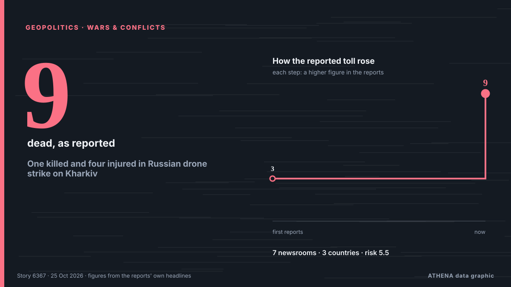

One killed and four injured in Russian drone strike on Kharkiv

A Russian jet-powered drone struck Kharkiv's Novobavarskyi district, killing one person and injuring four, Mayor Ihor Terekhov says. von Ukrainska Pravda (English)
Unabhängig gemeldet von 7 Medien in 3 Ländern seit dem 16. Okt., zuerst von Interfax-Ukraine (English); die Berichterstattung ist auf dem Höhepunkt. ATHENA stuft das Risiko als erhöht ein (5.5/10), vor allem wegen der Schwere des beschriebenen Schadens und der Qualität der Belege. Die Konfidenz liegt bei 81 % (hoch): 7 Medien bestätigen es unabhängig, bei einer mittleren Verlässlichkeit der Quellen von 80 %.
Warum es wichtig ist: Sicherheits- und diplomatische Entwicklungen können Bündnisse, Handel und Märkte weit über die direkt beteiligten Länder hinaus verschieben.
Was sich geändert hat: 8 neue Berichte von 3 Redaktionen in den 24 Stunden bis 25. Okt..
Erste Schlagzeile: Russian missile strikes injure 15 people in Kharkiv
Schlagzeilen werden auf Englisch angezeigt, wie veröffentlicht.
Auf einen Blick
Ausgewählt, bewertet und geschrieben nach der veröffentlichten Methodik von ATHENA. Kein Redakteur greift in einzelne Ereignisse ein. So entsteht ATHENA ›
| 16 Oct 07:03 UTC | 10 |
|---|---|
| 16 Oct 19:03 UTC | 4 |
| 17 Oct 07:03 UTC | 0 |
| 17 Oct 19:03 UTC | 1 |
| 18 Oct 07:03 UTC | 1 |
| 18 Oct 19:03 UTC | 0 |
| 19 Oct 07:03 UTC | 2 |
| 19 Oct 19:03 UTC | 0 |
| 20 Oct 07:03 UTC | 0 |
| 20 Oct 19:03 UTC | 0 |
| 21 Oct 07:03 UTC | 0 |
| 21 Oct 19:03 UTC | 0 |
| 22 Oct 07:03 UTC | 9 |
| 22 Oct 19:03 UTC | 0 |
| 23 Oct 07:03 UTC | 0 |
| 23 Oct 19:03 UTC | 0 |
| 24 Oct 07:03 UTC | 5 |
| 24 Oct 19:03 UTC | 2 |
| 25 Oct 07:03 UTC | 2 |
| 17 Oct 11:29 UTC | 5.3 |
|---|---|
| 17 Oct 14:01 UTC | 4.5 |
| 19 Oct 15:50 UTC | 5.4 |
| 25 Oct 08:46 UTC | 5.5 |
Warum diese Zahlen
Bedeutung
Risiko
Konfidenz
Die Berichterstattung – wer berichtete, und wann
Schlagzeile wie veröffentlicht · öffnet das Original- Interfax-Ukraine (English) · UkraineRussian attack on Rivne injures 7 – official
- Interfax-Ukraine (English) · UkraineStrike on Kharkiv kills 3, injures 5
- Interfax-Ukraine (English) · UkraineInjured in Kharkiv rises to 13
- Ukrainska Pravda (English) · UkraineTwo killed in Russian jet-powered drone attack on Kharkiv
- Interfax-Ukraine (English) · UkraineTwo killed, 14 injured in strike on Kharkiv – clarified information
- Ukrinform (English) · UkraineRussian strikes on Kharkiv kill three, injure seven
- Interfax-Ukraine (English) · UkraineRussian strike on private house in Zaporizhia injures 2 – official
- Interfax-Ukraine (English) · UkraineMorning strikes on Kharkiv kill 2, injure 19
- Ukrinform (English) · UkraineRussian strike on Kharkiv market leaves two killed, 17 injured
- Kyiv Post · UkraineRussian Drones Kill Kharkiv Market Traders, Plunges City Into Blackouts
- Ukrinform (English) · UkraineRussian attack damages homes in Kharkiv, over 100 windows shattered
- Ukrainska Pravda (English) · UkraineLarge-scale Russian attack on Kharkiv: number injured rises to 15 – photos
- Ukrinform (English) · UkraineRussian missile strikes injure 15 people in Kharkiv
- Kyiv Post · UkraineKharkiv Missile Strikes Injure 15, Including 3 Children
- Ukrinform (English) · UkraineRussian missile strike on Kharkiv injures three people
- Kyiv Post · UkraineRussian Strike on Poltava Kills 1, Injures 4
- Ukrinform (English) · UkraineRussian attack on Irpin kills one person and injures 19, including nine children
- APA (English) · Aserbaidschan · AzerbaijanRussian strike on park in Kharkiv region kills six - UPDATED
- Interfax-Ukraine (English) · UkraineStrike on Lozova market kills at least 2, injures 11 – Synehubov
- Ukrainska Pravda (English) · UkraineTwo killed, 34 injured in Russian strike on market in Lozova in Kharkiv Oblast
- Ukrinform (English) · UkraineRussian forces strike market in Lozova, casualties reported
- Euronews English · Frankreich · FranceUkraine: At least 9 people were killed in Russian attacks over the past 24 hours
- Interfax-Ukraine (English) · UkraineStrike on Lozova kills 2, injures 34 – Synehubov
- Ukrainska Pravda (English) · UkraineRussians attack passenger train in Kharkiv with drone – photos
- Ukrinform (English) · UkraineRussian strike sets commuter train on fire in Kharkiv
- Interfax-Ukraine (English) · UkraineThirty-six injured in Lozova, Kharkiv region; four in critical condition
- Ukrinform (English) · UkraineRussian strike on Lozova market: Two killed, injury toll rises to 36
- Ukrinform (English) · UkraineRussian strikes injure seven people in Kharkiv region, including two children
- Ukrinform (English) · UkraineRussian missile strike on Lozova kills one person and injures two others
- Kyiv Post · UkraineRussian Strike Hits Lozova Warehouse, Killing 1, Injuring 2
- Ukrainska Pravda (English) · UkraineOne killed and two injured in Russian attack on business in Lozova, Kharkiv Oblast – photos
- Ukrinform (English) · UkraineRussian attack sparks warehouse fire in Kharkiv suburb
- Ukrinform (English) · UkraineRussian drone attack on Kharkiv kills one person and injures others
- Ukrainska Pravda (English) · UkraineOne killed and four injured in Russian drone strike on Kharkiv
- Ukrainska Pravda (English) · UkraineThree firefighters injured in Russian attacks on Kharkiv – photo
- Kyiv Post · Ukraine4 Killed in Synelnykove Strike, Rescuers Hit in Kharkiv